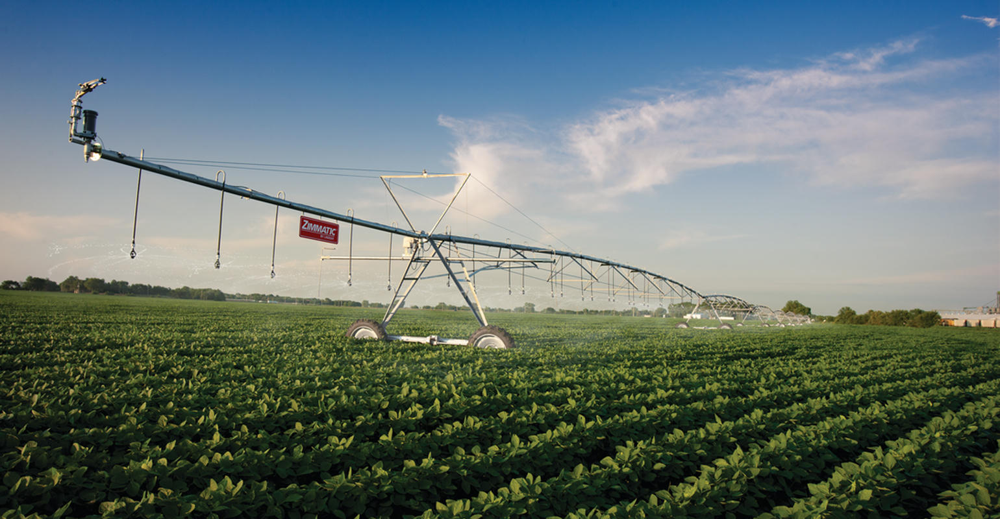
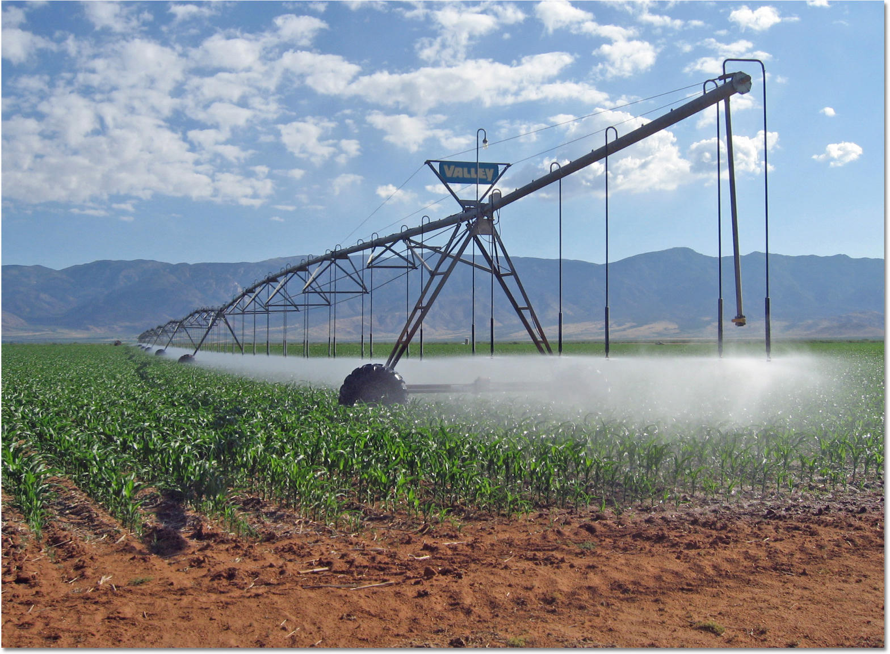
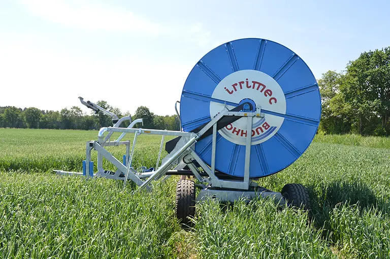
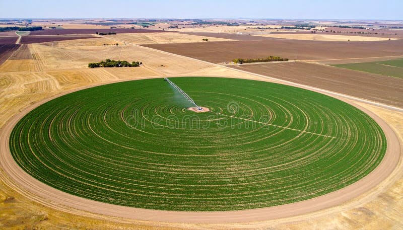

Offene Kulturen
Weizen, Mais, Kartoffeln unter der Kreismaschine. Unterschiedliche Millimeter auf Teilen des Kreises.
Intelligente Landwirtschaft · Agritech · Wasser
Der Betrieb setzt das Monatswasser. Das System plant Millimeter je Feld. Sie hören nur, wenn eine Regel bricht.

Vairrigation sieht den Bestand vom Satelliten und das Wetter am Boden und sagt, wie viele Millimeter welches Feld braucht — innerhalb des Wassers, das der Monat erlaubt.
Kreis, Trommel oder Tropfer. Die Technik, die Sie schon haben, bleibt. Keine neuen Rohre, keine neue Technik.

Weizen, Mais, Kartoffeln unter der Kreismaschine. Unterschiedliche Millimeter auf Teilen des Kreises.

Ein Zug, eine Gabe. Geplant aus demselben Monatswasser und demselben Bedarf der Frucht.

Obst und Datteln am Tropfer. Die Karte sind Reihen, kein Kreis. Die Frage bleibt: wohin zahlt das Wasser der Nacht noch.
Was vor dem Frühstück klar sein muss: wie viel Wasser der Monat noch hält, was jedes Feld schon getrunken hat, was heute Nacht passiert.
von 12 000 m³ Hofwasser
| Feld | Wasser drauf | Aktion |
|---|---|---|
| Feld 1 | 1 250 m³ · 12 mm | Heute Nacht wässern |
| Feld 2 | 2 340 m³ · 22 mm | Warten — Regen |
| Feld 3 | 630 m³ · 6 mm | Überleben 6 mm |
| Feld 4 | 210 m³ · 2 mm | Braucht Wasser |
| Feld 5 | 1 150 m³ · 11 mm | Stopp — Anteil weg |
Ein Feld, das Sie schon bewässern. Ein Monat. Dann behalten, ändern oder stoppen. Keine neue Leitung.
Frucht, Saat, bisherige Gabe, wie viel Wasser der Monat erlaubt.
Zwei kurze Nachrichten: Wasser noch, Wasser drauf, Plan für zwei Nächte.
Zweimal falsch — wir ändern die Zahlen mit Ihnen.
Wasser verbraucht. Wasser noch im Monat. Ihr Urteil.
Erfolg ist dieselbe Ernte mit weniger Wasser — oder ein gesünderer Bestand und mehr Ertrag aus dem Wasser, das Sie schon haben.
Programme für weniger Wasser gibt es in den meisten Ländern. Den Antrag stellen Sie selbst. Meist braucht es einen Zähler und den Nachweis, dass weniger Wasser aufs Feld ging. Wir helfen bei den Unterlagen. Die Förderung ist nie die ganze Rechnung.
Einseiter anfordernWeniger Wasser. Gesündere Pflanzen. Mehr Ertrag. Vertrauen Sie dem System — und der nächsten Saison.
Über einen Test sprechen